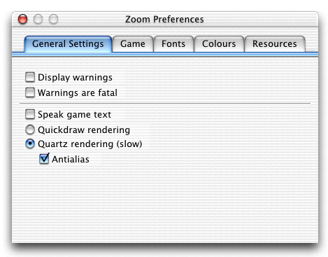
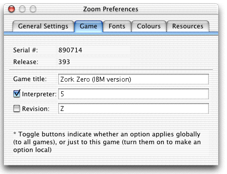
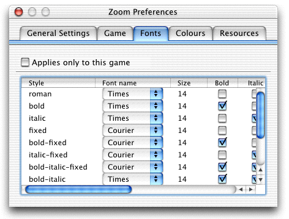
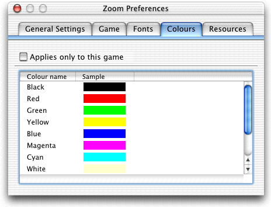
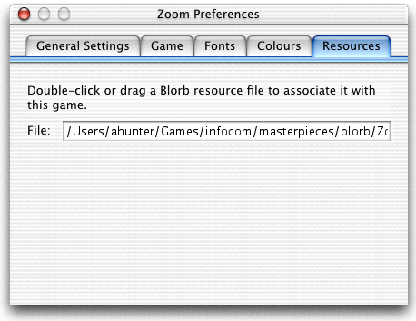

| Home | Previous | Next |
Under Mac OS X, Zoom is configured by choosing the 'Preferences...' option from the Zoom menu. This will pop up the preferences dialog. Zoom will apply and save the settings when the box is closed. Some settings will only take effect when the game is restarted - the game's own restart command will usually suffice for this.

These options configure general features of Zoom. The settings apply globally: you cannot configure them for individual games. The options are as follows:

This tab allows you to set general options relating to the game. When you get a new game, you will very likely want to set the title to change it from Zoom's rather boring default. Advanced users may want to change the interpreter and revision to get different effects. If you tick the checkboxes, the setting will apply only to the game you have currently loaded; unticked, the settings will apply to all games.
Infocom defines the following interpreter numbers:

This tab allows you to set the fonts Zoom will be using. If the checkbox is ticked, the settings will apply only to the game you have currently loaded, otherwise they will apply to all games. You are free to choose any combination of fonts, but for best results, make sure that the fixed pitch fonts are all the same size and shape. Some version 6 games do not deal well with any fonts being a different size.

This tab allows you to set the 10 default Z-Machine colours. As before, the checkbox indicates whether or not the settings apply to just the loaded game or to all games. Click on a colour name to change it.

This tab shows the resources in use for a game. If Zoom has found the resources itself (without any help), the field will be blank. You can help Zoom by dragging a resource file to the window: this will replace any resources that are currently loaded with the new file, and Zoom will try to load this file when the game is started in the future. It is highly recommended that you restart a game after loadeding new resources. These settings always apply to an individual game.
Zoom written by Andrew Hunter. Mail any suggestions, bug reports or abuse to andrew@logicalshift.demon.co.uk